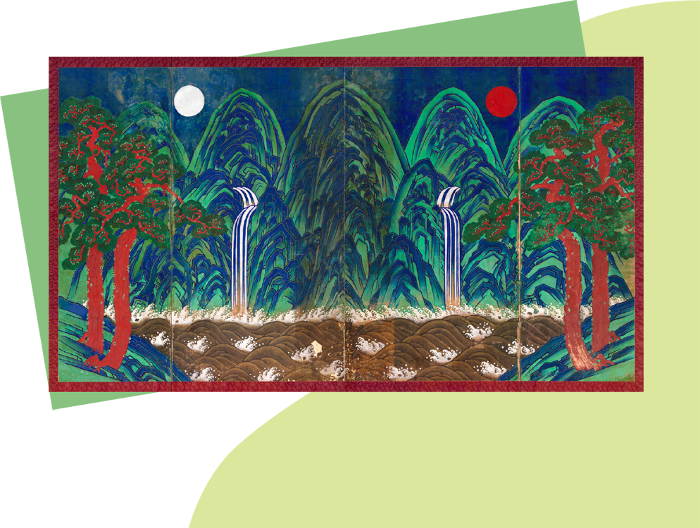

마무리하기
우리 문화에서 나타나는 색의 아름다움을 감상해
봅시다.

우리 문화의 옛 미술 작품에는
어떤 색들이 있는지 찾아볼까?
정답

「일월오봉도」 (비단에 채색/248x366cm/19~20세기 초)
정정완(한국/1913~2007) 「색동 오방장 두루마기」
(비단/71x55 cm/1997년 작)
「백자 청화 구름 용무늬 항아리」
(도자기 - 백자/높이: 43.63 cm, 지름: 36.6 cm/조선시대)
「조각보」 (견직물/41x39 cm/조선 시대)